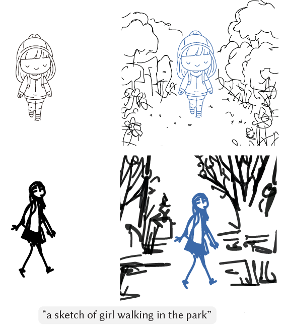
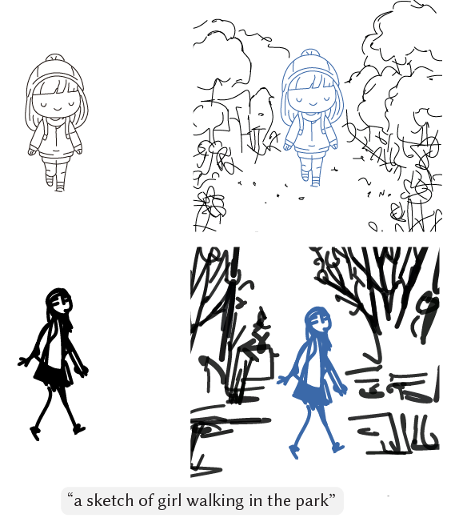
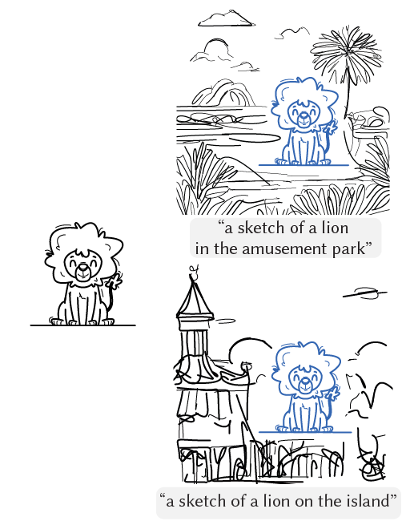

Same prompt, different partial sketches
Given the same prompt, our method can generate completed sketches that depict the same content in different styles that align with those of the user-provided partial sketches.
Sketches are an important medium of expression and recently many works concentrate on automatic sketch creations. One such ability very useful for amateurs is text-based completion of a partial sketch to create a complex scene, while preserving the style of the partial sketch. Existing methods focus solely on generating sketch that match the content in the input prompt in a predefined style, ignoring the styles of the input partial sketches, e.g., the global abstraction level and local stroke styles. To address this challenge, we introduce AutoSketch, a style-aware vector sketch completion method that accommodates diverse sketch styles and supports iterative sketch completion. AutoSketch completes the input sketch in a style-consistent manner using a two-stage method. In the first stage, we initially optimize the strokes to match an input prompt augmented by style descriptions extracted from a vision-language model (VLM). Such style descriptions lead to nonphotorealistic guidance images which enable more content to be depicted through new strokes. In the second stage, we utilize the VLM to adjust the strokes from the previous stage to adhere to the style present in the input partial sketch through an iterative style adjustment process. In each iteration, the VLM identifies a list of style differences between the input sketch and the strokes generated in the previous stage, translating these differences into adjustment codes to modify the strokes. We compare our method with existing methods using various sketch styles and prompts, perform extensive ablation studies and qualitative and quantitative evaluations, and demonstrate that AutoSketch can support diverse sketching scenarios.

After the initial sketch completion, the user can keep the strokes generated in the first completion and (a) edit the sketch or (b) update the input prompt . Then, our method will complete the sketch once again to add more details. (The blue and green line denotes the input partial sketch of the first and second iteration, respectively.)
Given the same prompt, our method can generate completed sketches that depict the same content in different styles that align with those of the user-provided partial sketches.
Given the same partial sketch, our method can generate different completed sketches representing the contents of various prompts.
